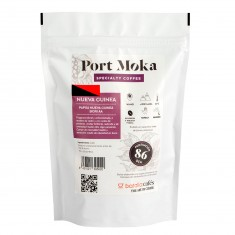
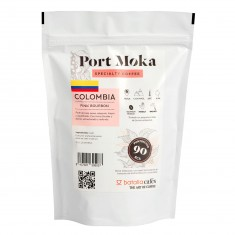
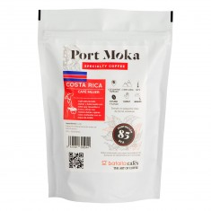
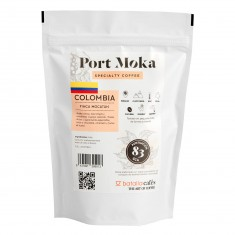
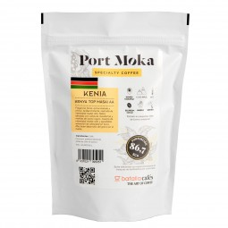
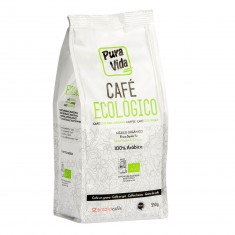
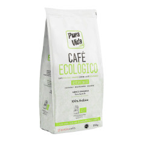
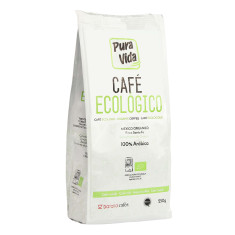
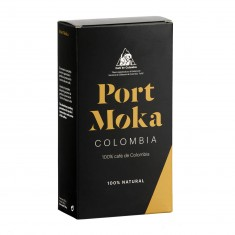
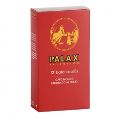

¡Cafés en grano!

Café Especialidad Port Moka - Papúa Nueva Guinea Sigri AA (SCA 86) - Café Grano Tueste Natural de 250 gr | Arábica 100% ($700)

Café 100% Arábica 1KG - Café Grano Tueste Natural | Café en Grano Arábica 100% ($500)

Café Especialidad Port Moka - Café Colombia Pink Bourbon Finca El Danubio (SCA 90) - Café en Grano Arábica 100% Tueste Natural($800)

Café Especialidad Port Moka - Café Costa Rica "La Pastora Café Mujer" (SCA 85) - Café en Grano Arábica 100% Tueste Natural($700)

Café Especialidad Port Moka - Café Colombia Finca Mocatán (SCA 83) - Café en Grano Arábica 100% Tueste Natural($750)

Café Especialidad Port Moka - Café Kenia Top Masai AA (SCA 86.75) - Café Grano Tueste Natural de 250 gr | Arábica 100% ($800)
¡Cafés Ecolgicos!

Café Ecológico en Grano Pura Vida

Café descafeinado ECO Pura Vida 100% Arábica | Café Molido 250gr Tueste Natural | Arábica 100%

Café ECO Pura Vida 100% Arábica | Café Molido 250gr Tueste Natural | Arábica 100%
¡Café molido!

PORT MOKA COLOMBIA MOLIDO 250gr

PALAX molido 100% natural 250gr